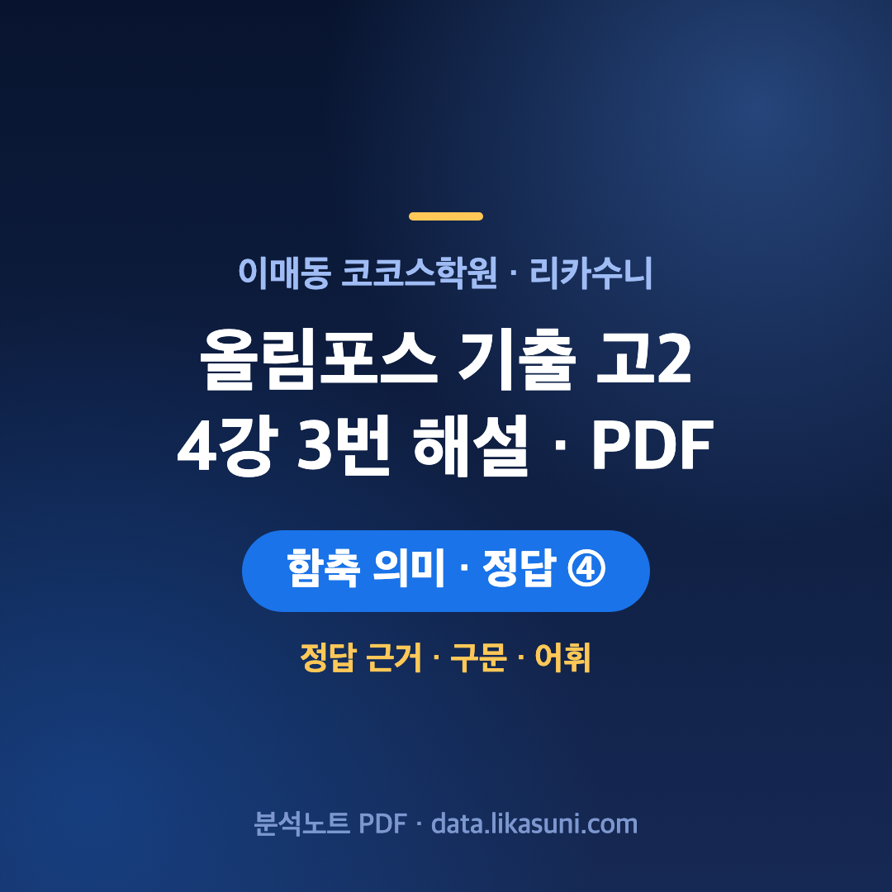
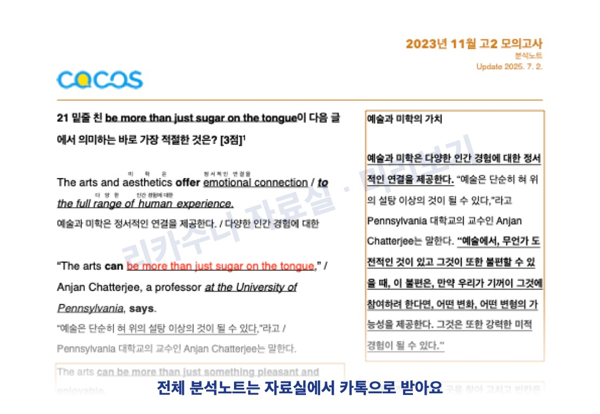

리카수니 분석노트 해설 · 이매동 코코스학원
올림포스 전국연합학력평가 기출문제집 고2 4강 3번 함축 의미 해설·분석이에요. (2023년 11월 고2 전국연합학력평가 영어 21번 · 밑줄 함축 의미 · 정답 ④)
정답 근거, 오답 거르는 법, 구문(if we're willing to · vehicles to contend with · while also -ing), 어휘를 정리했고 분석노트 pdf 받는 곳은 글 아래에 있어요.
안녕하세요, 이매동 코코스학원 리카수니 원장입니다.
학생 요청으로 만든 분석노트를 바탕으로 정리했어요. 지문은 교재에 있으니 교재를 펴 놓고 함께 보세요.
| 한눈에 보는 정답 · 교재: 올림포스 전국연합학력평가 기출문제집 고2 (EBS) · 위치: 4강 3번 (밑줄 친 부분의 함축 의미, 3점) · 원래 시험: 2023년 11월 고2 전국연합학력평가 영어 21번 · 밑줄: be more than just sugar on the tongue · 정답: ④ embrace a variety of experiences beyond pleasure (즐거움을 넘어 다양한 경험을 받아들이다) |
예술은 '혀 위의 설탕'처럼 달콤하고 즐겁기만 한 것이 아니라, 불편하고 어려운 생각과 마주하게 해서 변화와 성장을 줄 수 있다는 글이에요.
흐름은 예술 = 인간 경험 전체와의 정서적 연결 → 불편함도 기꺼이 마주하면 변화의 기회 → 피카소 '게르니카'·한스베리 '태양 속의 건포도' 예시예요.
| · 근거 1: 첫 문장에서 예술은 '다양한 인간 경험 전체(the full range of human experience)'와 정서적으로 연결된다고 해요. · 근거 2: 예술 속 도전적이고 불편한 것도 기꺼이 마주하면 변화·변형의 가능성을 준다고 말해요. · 근거 3: 예술은 어렵고 불편한 생각과 씨름하게 하는 매개체가 된다고 정리하고, 전쟁의 고통·인종 차별을 다룬 작품을 예로 들어요. → sugar on the tongue = 그냥 달콤하고 즐거운 것. 그 '이상'이라는 건 즐거움을 넘어 다양한 경험을 받아들인다는 뜻, 정답 ④예요. |
| · 밑줄 표현을 글자 그대로(맛·설탕·음식) 풀이한 선택지는 거르세요. 비유를 글의 주장으로 바꿔 읽어야 해요. · '즐거움'만 말하거나 '불편함을 피한다'는 쪽은 글과 반대예요. 핵심은 '즐거움 + 불편함까지 함께'예요. 함축 의미 문제는 밑줄 바로 뒤 문장(In art, when there's something challenging ~)이 밑줄을 풀어 주는 경우가 많아요. |

▲ 올림포스 기출문제집 고2 4강 3번 함축 의미 해설·분석 pdf 분석노트 미리보기
| 1) 삽입된 조건절 if we're willing to engage with it (기꺼이 ~한다면) → this discomfort, if we're willing to engage with it, offers the possibility of some change (2023년 11월 고2 21번) (주어 this discomfort 와 동사 offers 사이에 조건절이 끼어든 구조 → 수 일치는 discomfort 에 맞춰 offers) 2) something + 형용사 (something challenging) / 계속적 용법 which 3) vehicles to contend with ~ (~와 씨름할 매개체, to부정사 형용사적 용법) / otherwise = 그렇지 않았더라면 4) a way to consider ~ / 과거분사 caused by ~ 가 앞의 명사 수식 (causing 아님) 5) while also -ing (~하면서 또한) / 감정을 주는 쪽은 touching (touched 아님) |
| 영어 | 뜻 |
|---|---|
| aesthetics | 미학 / aesthetic 미적인 |
| emotional connection | 정서적 연결 |
| the full range of | ~의 전 범위, 다양한 |
| challenging | 도전적인, 어려운 |
| discomfort | 불편함 (= uneasiness) |
| be willing to | 기꺼이 ~하다 |
| engage with | ~에 참여하다, 마주하다 (= face) |
| transformation | 변형, 변화 |
| vehicle | 매개체, 수단 (= medium) |
| contend with | ~와 싸우다, 씨름하다 |
| otherwise | 그렇지 않으면 |
| capture | 포착하다 |
| heartbreaking | 가슴 아픈 |
| universal suffering | 보편적인 고통 |
| racism | 인종 차별 / discrimination 차별 |
| pursuit | 추구 |
| portrait | 초상, 묘사 |
| 서술형 대비 분석노트에 문장마다 쉬운 영어로 바꾼 문장(= The arts can be more than just something pleasant and enjoyable.)과, 틀린 곳 고치기·빈칸 채우기 문제(정답 포함)를 넣어 두었어요. something challenging 어순, caused/touching 같은 분사 고르기가 서술형·어법에 잘 나와요. |
| 📂 올림포스 기출문제집 고2 4강 3번 분석노트 pdf 받는 법 끊어 읽기·해석·구문·서술형 문제가 정리된 PDF 는 리카수니 자료실에서 카카오 로그인 후 카톡으로 받을 수 있어요. 올림포스 기출문제집 다른 강·번호도 같은 페이지에서 요청할 수 있어요. 2023년 11월 고2 모의고사 문제지·정답 pdf 는 자료실 위쪽 '모의고사' 메뉴에서 찾을 수 있어요. ▶ 분석노트 요청하기 (리카수니 자료실) https://data.likasuni.com/notes/#note-req ※ 출처: 한국교육방송공사(EBS) 올림포스 전국연합학력평가 기출문제집 고2 (2023년 11월 고2 전국연합학력평가 영어 21번). 지문 원문과 선택지 전체, 전체 해석은 싣지 않았어요. |
Q. 올림포스 기출문제집 고2 4강 3번 함축 의미 해설·분석 정답은?
A. ④ embrace a variety of experiences beyond pleasure (즐거움을 넘어 다양한 경험을 받아들이다)
Q. 분석노트 pdf 는 어디서 받나요?
A. 리카수니 자료실(data.likasuni.com)에서 카카오 로그인 후 카톡으로 받을 수 있어요. 위 안내의 링크로 이동하세요.
이상 올림포스 기출문제집 고2 4강 3번 함축 의미 해설·분석 pdf 정리였어요. 궁금한 점은 댓글로 남겨 주세요.
| 🏫 이매동 코코스학원 안내 분당 이매동 코코스학원은 초등·중등·고등 영어와 수학을 가르쳐요. 모의고사·수능특강·내신 대비가 궁금하시면 편하게 문의해 주세요. · 홈페이지: https://www.cocosedu.co.kr/ · 주소: 경기 성남시 분당구 판교로 476 2층 |
#올림포스기출문제집고2 #올림포스기출문제집 #올림포스전국연합학력평가기출문제집 #올림포스기출4강 #올림포스기출고24강3번 #2023고211월모의고사 #고211모영어 #고211모영어21번 #함축의미 #sugaronthetongue #EBS영어 #영어분석노트 #이매동영어학원 #코코스학원 #리카수니